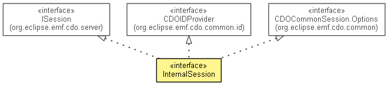

org.eclipse.emf.cdo.spi.server
Interface InternalSession
- All Superinterfaces:
- CDOCommonSession, CDOCommonSession.Options, CDOIDProvider, CDOPermissionProvider, Closeable, IAdaptable, IContainer<IView>, INotifier, IOptions, IOptionsContainer, ISession, IUserAware
- public interface InternalSession
- extends ISession, CDOIDProvider, CDOPermissionProvider, CDOCommonSession.Options

If the meaning of this type isn't clear, there really should be more of a description here...
- Since:
- 3.0
- No Implement
- This interface is not intended to be implemented by clients.
- No Extend
- This interface is not intended to be extended by clients.
|
Method Summary |
void |
collectContainedRevisions(InternalCDORevision revision,
CDOBranchPoint branchPoint,
int referenceChunk,
Set<CDOID> revisions,
List<CDORevision> additionalRevisions)
|
InternalSessionManager |
getManager()
|
InternalView |
getView(int viewID)
|
InternalView[] |
getViews()
|
InternalTransaction |
openTransaction(int viewID,
CDOBranchPoint branchPoint)
|
InternalView |
openView(int viewID,
CDOBranchPoint branchPoint)
|
void |
sendBranchNotification(InternalCDOBranch branch)
|
void |
sendCommitNotification(CDOCommitInfo commitInfo)
Deprecated. As of 4.2 use sendCommitNotification(CDOCommitInfo, boolean) |
void |
sendCommitNotification(CDOCommitInfo commitInfo,
boolean clearResourcePathCache)
|
void |
sendLockNotification(CDOLockChangeInfo lockChangeInfo)
|
void |
sendRemoteMessageNotification(InternalSession sender,
CDORemoteSessionMessage message)
|
void |
sendRemoteSessionNotification(InternalSession sender,
byte opcode)
|
void |
sendRepositoryStateNotification(CDOCommonRepository.State oldState,
CDOCommonRepository.State newState)
Deprecated. use
sendRepositoryStateNotification(org.eclipse.emf.cdo.common.CDOCommonRepository.State, org.eclipse.emf.cdo.common.CDOCommonRepository.State, CDOID)
instead |
void |
sendRepositoryStateNotification(CDOCommonRepository.State oldState,
CDOCommonRepository.State newState,
CDOID rootResourceID)
|
void |
sendRepositoryTypeNotification(CDOCommonRepository.Type oldType,
CDOCommonRepository.Type newType)
|
void |
setSubscribed(boolean subscribed)
|
void |
setUserID(String userID)
|
void |
viewClosed(InternalView view)
|
TEMP_VIEW_ID
static final int TEMP_VIEW_ID
- See Also:
- Constant Field Values
getManager
InternalSessionManager getManager()
- Specified by:
getManager in interface ISession
setUserID
void setUserID(String userID)
- Since:
- 4.2
getViews
InternalView[] getViews()
- Specified by:
getViews in interface CDOCommonSession
getView
InternalView getView(int viewID)
- Specified by:
getView in interface CDOCommonSession
openView
InternalView openView(int viewID,
CDOBranchPoint branchPoint)
- Specified by:
openView in interface ISession
openTransaction
InternalTransaction openTransaction(int viewID,
CDOBranchPoint branchPoint)
- Specified by:
openTransaction in interface ISession
viewClosed
void viewClosed(InternalView view)
setSubscribed
void setSubscribed(boolean subscribed)
collectContainedRevisions
void collectContainedRevisions(InternalCDORevision revision,
CDOBranchPoint branchPoint,
int referenceChunk,
Set<CDOID> revisions,
List<CDORevision> additionalRevisions)
sendRepositoryTypeNotification
void sendRepositoryTypeNotification(CDOCommonRepository.Type oldType,
CDOCommonRepository.Type newType)
throws Exception
- Throws:
Exception
sendRepositoryStateNotification
@Deprecated
void sendRepositoryStateNotification(CDOCommonRepository.State oldState,
CDOCommonRepository.State newState)
throws Exception
- Deprecated. use
sendRepositoryStateNotification(org.eclipse.emf.cdo.common.CDOCommonRepository.State, org.eclipse.emf.cdo.common.CDOCommonRepository.State, CDOID)
instead
- Throws:
Exception
sendRepositoryStateNotification
void sendRepositoryStateNotification(CDOCommonRepository.State oldState,
CDOCommonRepository.State newState,
CDOID rootResourceID)
throws Exception
- Throws:
Exception- Since:
- 4.1
sendBranchNotification
void sendBranchNotification(InternalCDOBranch branch)
throws Exception
- Throws:
Exception
sendCommitNotification
@Deprecated
void sendCommitNotification(CDOCommitInfo commitInfo)
throws Exception
- Deprecated. As of 4.2 use
sendCommitNotification(CDOCommitInfo, boolean)
- Throws:
Exception
sendCommitNotification
void sendCommitNotification(CDOCommitInfo commitInfo,
boolean clearResourcePathCache)
throws Exception
- Throws:
Exception- Since:
- 4.2
sendRemoteSessionNotification
void sendRemoteSessionNotification(InternalSession sender,
byte opcode)
throws Exception
- Throws:
Exception
sendRemoteMessageNotification
void sendRemoteMessageNotification(InternalSession sender,
CDORemoteSessionMessage message)
throws Exception
- Throws:
Exception
sendLockNotification
void sendLockNotification(CDOLockChangeInfo lockChangeInfo)
throws Exception
- Throws:
Exception- Since:
- 4.1
Copyright (c) 2011, 2012 Eike Stepper (Berlin, Germany) and others.